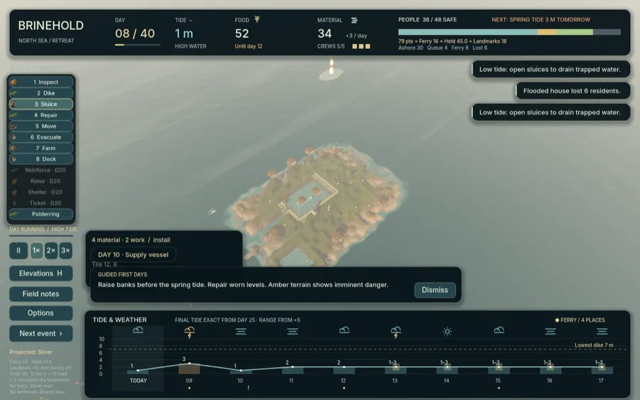
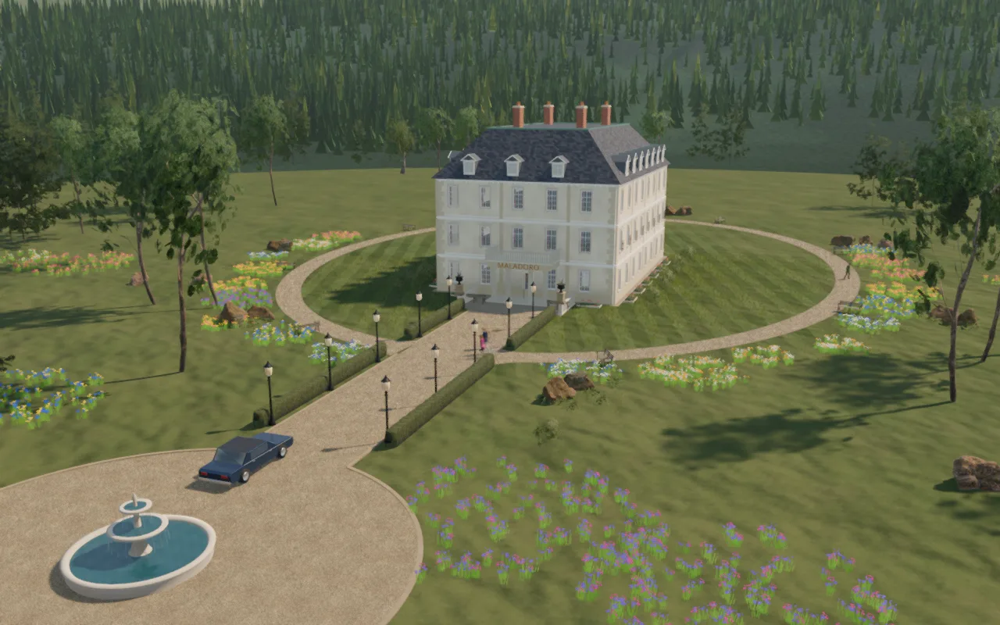
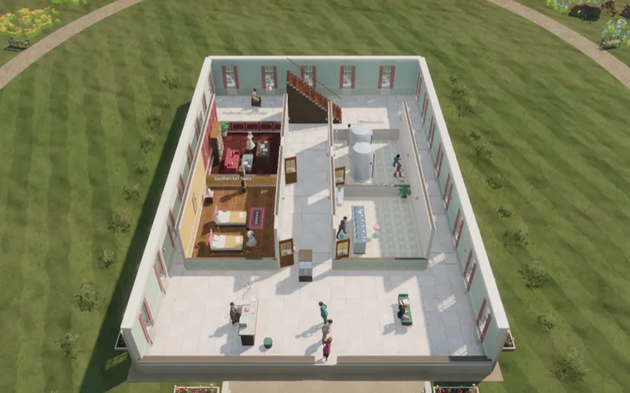

Ein unabhängiges Studio aus Deutschland. Wir bauen kleine, private Werkzeuge für Ordnung und Alltag, liebevolle Welten für die Kleinsten – und tiefe Strategiespiele für alle, die gern lange nachdenken.
Veröffentlicht oder mitten in der Produktion – das ist, woran wir gerade mit ganzem Herzen arbeiten.


Biber Bruno hat eine Werkstatt, und die Tiere aus dem Dorf bringen ihm ihre kaputten Sachen. Dein Kind findet durch Ausprobieren heraus, was passt: reparieren, putzen, anmalen – ganz ohne Texte und ohne Scheitern.

Jedes Spielzeug hatte einen großen Tag. Dein Kind schenkt ihm einen kleinen, liebevollen Abschluss – ein ruhiges Bilderbuch zum Mitspielen, gemacht für die letzten Minuten vor dem Einschlafen.


Hamburg, 1600. Dein Siegel. Dein Risiko. Du führst ein Kontor und erfindest die Versicherung – handelst mit Gefahr und baust aus Briefen, Schiffslisten und Totenregistern deine eigene Statistik auf.


„The germs are real. Nobody believes you.“ Leite ein Krankenhaus in einer Hafenstadt zwischen 1875 und 1892 – in den Jahren, in denen die Medizin von Miasmen zu Mikroben wechselt. Jede Entdeckung ist echt, jeder Fortschritt hart erkämpft.


Die Nachtschicht gehört dir. Führe einen kleinen IT-Security-Dienstleister aus dem Kellerbüro: Kunden gewinnen, Admins einteilen, Schutz kaufen – und entscheiden, wie viel Marge du opferst, bevor die nächste Phishing-Welle zuschlägt.


Gründe deinen eigenen Staat auf einer stillgelegten Ölplattform in der Nordsee. Baue Deck für Deck nach oben, halte Krypto-Pioniere, Öko-Kommune und Steuerflüchtlinge bei Laune und kämpfe um das, was einer Mikronation am meisten fehlt: Anerkennung. Mit Sturmsaison, Küstenwache und dem Staatsfunk „Radio Plattform 1“.


Franken im Jahr 1382: Als Bader führst du Badestube und Praxis, versorgst Patienten mit den Mitteln der Zeit, lernst bei Meistern, reist über Land und hältst deinen Haushalt zusammen. Aus dem früheren Browserspiel wird gerade eine umfangreiche Vollversion – gründlich recherchiert und offen darüber, wo es vereinfacht.

Das Wasser steigt nach einem öffentlichen Gezeitenplan. Baue Deiche und Schleusen, verlege Gebäude und bringe die Bewohner rechtzeitig per Fähre in Sicherheit – bis am letzten Tag die höchste Flut kommt.


Baue die teuerste Privatklinik der Alpen, erfinde Reichen immer kostspieligere Leiden wie Yachtnacken und Erbschaftsmüdigkeit und halte Prüfer und Anwälte hin. Eine böse Komödie über Gier.
Eine kleine Auswahl. Der ganze Katalog steht auf einer eigenen Seite – mit Filter nach Bereich und Gerät.
Kurze Anleitungen zu typischen Alltagsfragen – mit und ohne unsere Apps.
Minh Nguyen Studios ist ein kleines, unabhängiges Studio. Wir machen weniger Spiele – und dafür jedes so, als wäre es das einzige.
Jede Welt soll sich beim ersten Blick wie ein kleines Geschenk anfühlen.
Spiele für Kinder ohne Druck, ohne Tricks und mit Eltern im Blick.
Systeme, die man stundenlang erforscht – leicht zu lernen, schwer zu meistern.
Historische Spiele, gründlich recherchiert und offen darüber, wo sie vereinfachen.
Für Presseanfragen, Kooperationen oder einfach ein Hallo.
hello@minh.systems